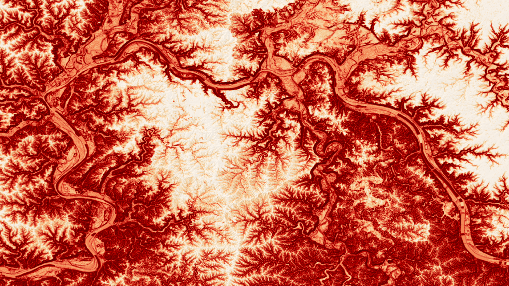

Featured Projects
Uptown Intersection Safety Survey
Maps and Charts I Produced to highligh percieved intersection safety in Uptown Cincinnati around the UC Campus
After a fellow group member accidentally shared our survey to an e-mail list with over 10,000 recipients, we gained a much greater level of participation than we had anticipated. To capitalize on this statistically signficant response, we created a number of charts, maps, and rankings to exhaustively illustrate the intersections percieved with the most danger in Uptown. We blended together both hard data on the intersection's attributes and people's personal experiences with them to return a list of action items and design recommendations.

Landslide Risk in Kentucky
Landslide Risk Maps I Created for the Northern and Eastern Regions of Kentucky using Logistic Regression
In 2025 I witnessed a landslide in real-time following two and half days of continuous rainfall. Since then, I have considered landslides to be a consistent object of interest. I integrated this interest into a project for my Spatial Statistics 2 class by using an inventory of landslides provided by the Kentucky Geological Survey to estimate landslide risk across Kentucky using logistic regression of variables derived from the terrain. During this project I gained a number of skills working with DEMs, R for regression and rasters, and Principal Component Analyses.
Land Subsidence Interpolation
Estimation of Land Subsidence within California's Central Valley using Various Interpolation Algorithms
The goal of this project was to manually implement GIS interpolation algorithms such as Kriging or IDW as part of my Advanced GIS class. I applied these goals in the hopes of creating a continuous map of subsidence across California's southern Central Valley. Using rasterio in Python, these interpolation grids were then plotted against irrigated land segmented with Normalized Difference Moisture Index values.